Disentangling Hidden and Visible Layers via Occlusion-Aware Image Decomposition
1Wenzhou University 2360 AI Research
* Equal Contribution. † Project Lead. ‡ Corresponding Author.
Abstract
Recent diffusion-based approaches have made substantial progress in image layer decomposition. However, accurately decomposing complex natural images remains challenging due to difficulties in occlusion completion, robust layer disentanglement, and precise foreground boundaries. Moreover, the scarcity of high-quality multi-layer natural image datasets limits advancement. To address these challenges, we propose RevealLayer, a diffusion-based framework that decomposes an RGB image into multiple RGBA layers, enabling precise layer separation and reliable recovery of occluded content in natural images. RevealLayer incorporates three key components: (1) a Region-Aware Attention module to disentangle hidden and visible layers; (2) an Occlusion-Guided Adapter to leverage contextual information to enhance overlapping regions; and (3) a composite loss to enforce sharp alpha boundaries and suppress residual artifacts. To support training and evaluation, we introduce RevealLayer-100K, a high-quality multi-layer natural image dataset constructed through a collaboration between automated algorithms and human annotation, and further establish RevealLayerBench for benchmarking layer decomposition in general natural scenes. Extensive experiments demonstrate that RevealLayer consistently outperforms existing approaches in layer decomposition.
Overview
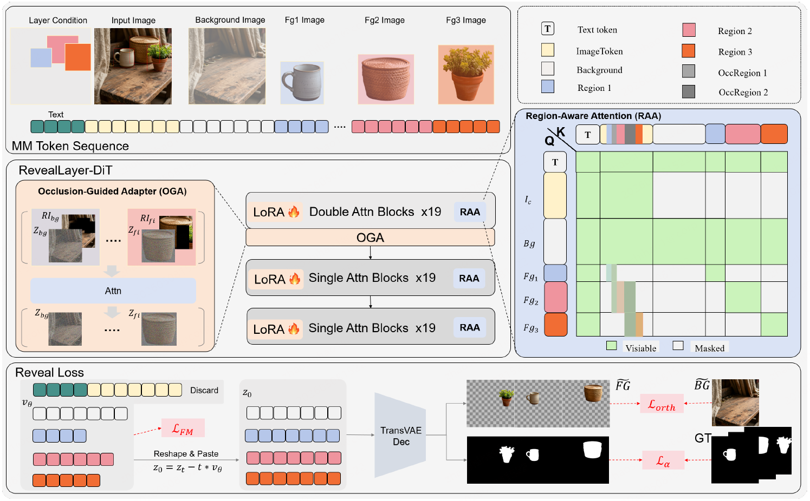
Dataset Construction Pipeline
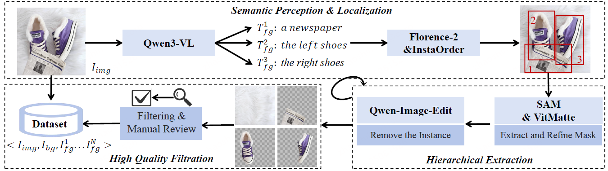
Qualitative Comparison on Layer Decomposition
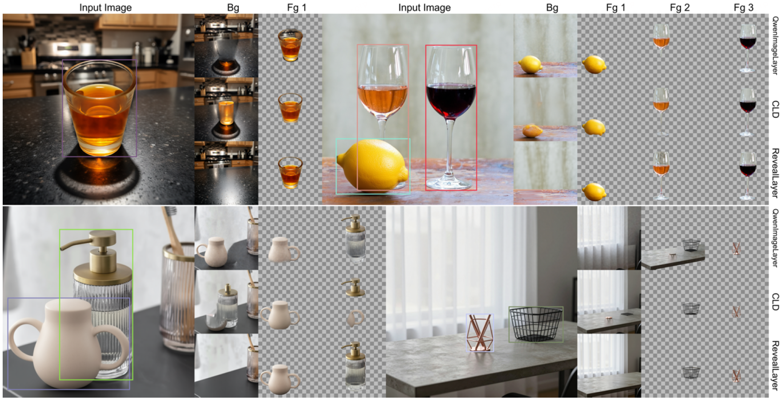
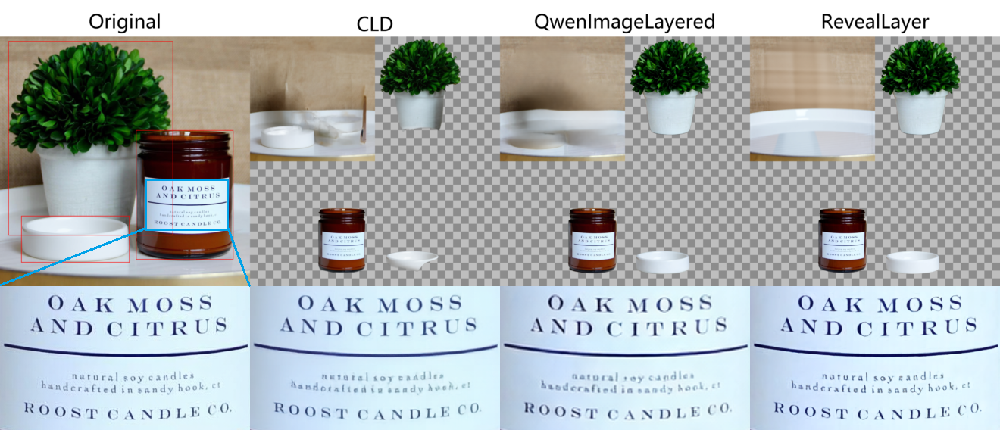
Qwen-Image-Layered introduces variable-layer decomposition, yet the number, order, and semantic meaning of the generated layers remain ambiguous. CLD uses boundingbox conditioning for controllable decomposition, but it is mostly restricted to stylized poster images and tends to produce residual artifacts and blurred object edges. RevealLayer achieves better bbox-based controllability while suppressing target-related artifacts, completing occluded regions, and preserving visible-region consistency.
More cases of the RevealLayer
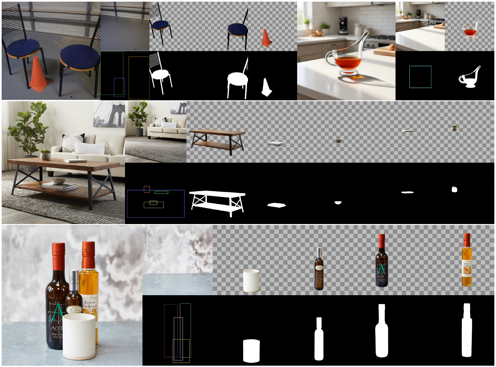
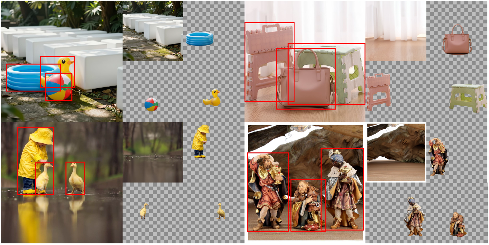
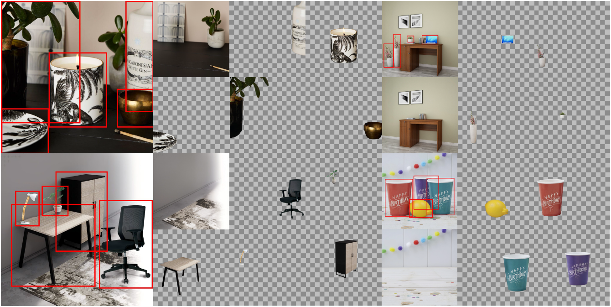
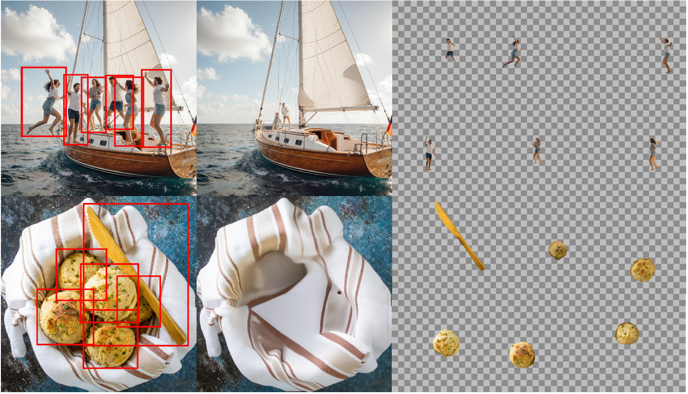
Controllability
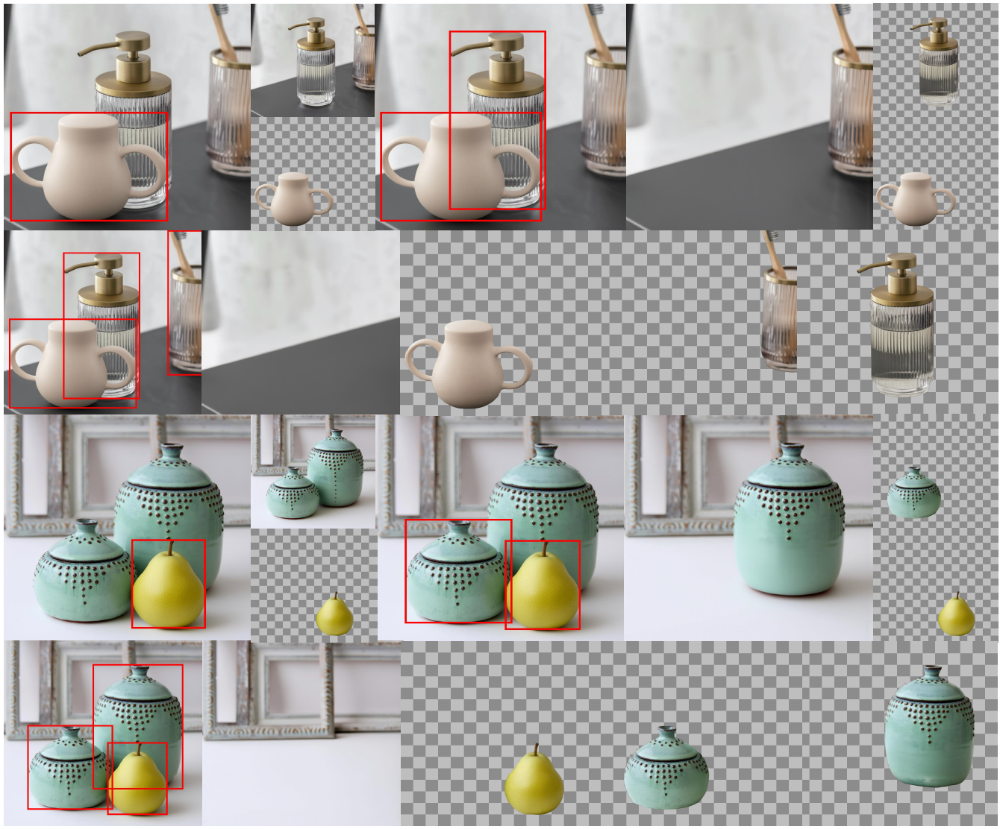
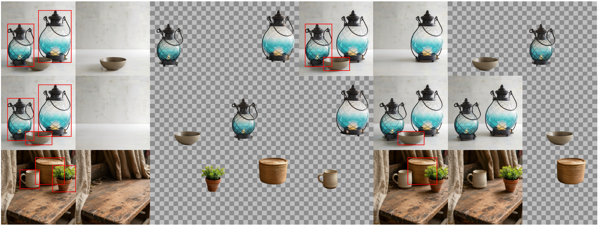
Object Removal
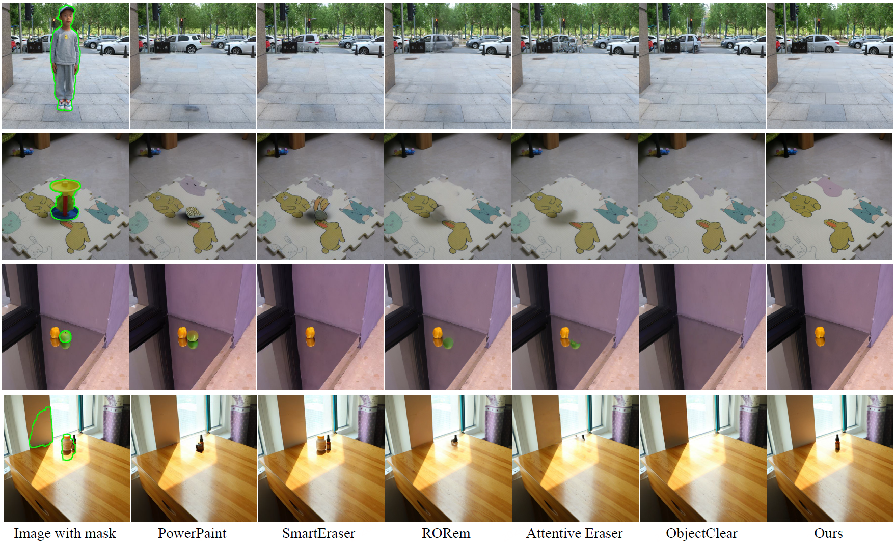
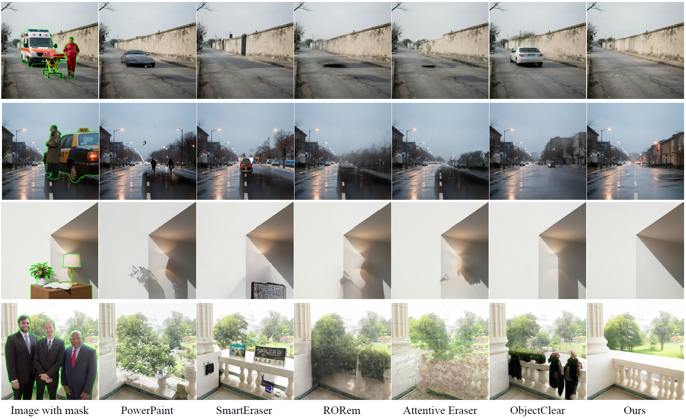
Image Matting
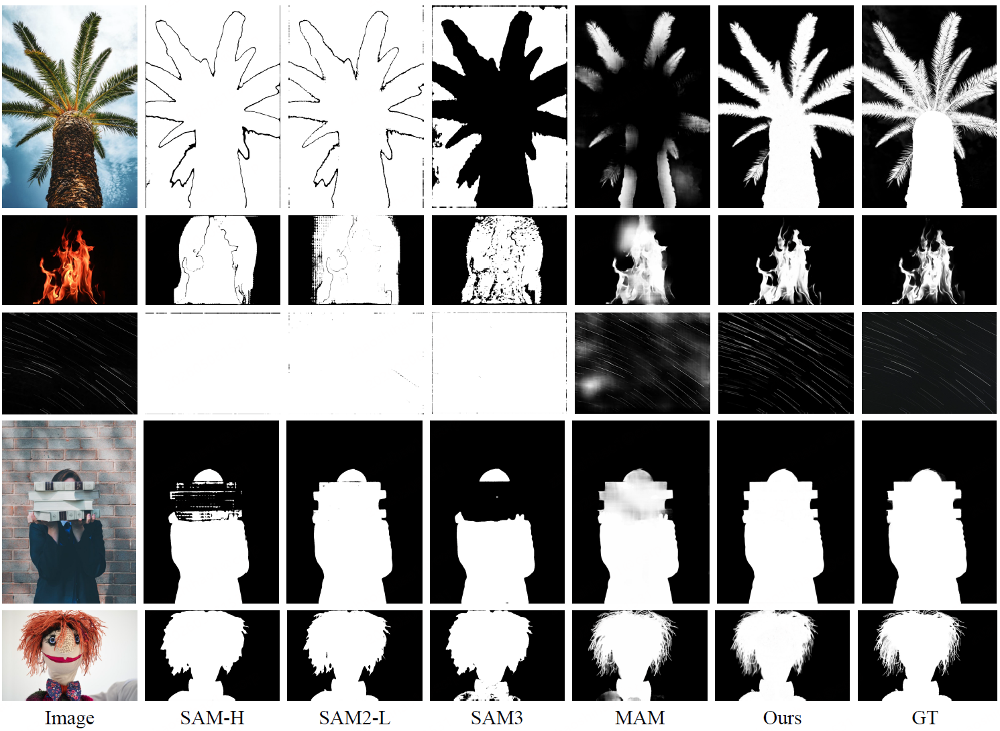
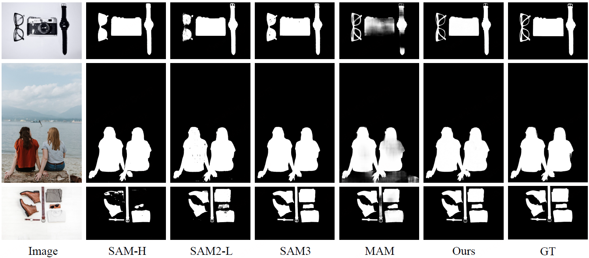
BibTeX
@inproceedings{wang2026reveallayer,
title={RevealLayer: Disentangling Hidden and Visible Layers via Occlusion-Aware Image Decomposition},
author={Wang, Binhao and Zhao, Shihao and Cheng, Bo and Ji, Qiuyu and Ma, Yuhang and Wu, Liebucha and Liu, Shanyuan and Leng, Dawei and Yin, Yuhui},
booktitle={International Conference on Machine Learning},
year={2026}
}